当我们点击新增商品按钮：
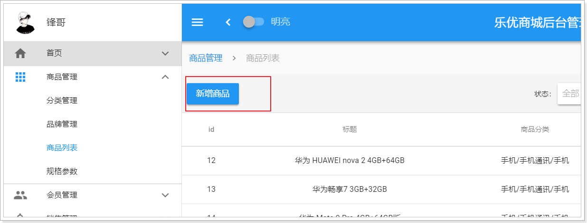
就会出现一个弹窗：
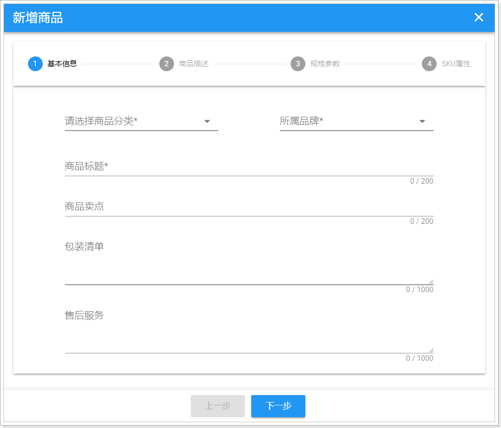
里面把商品的数据分为了4部分来填写：
cid1，cid2，cid3属性brandId属性title属性subTitle属性afterService属性packingList属性description属性，数据较多，所以单独放一个页面genericSpec属性对应到页面中的四个stepper-content：
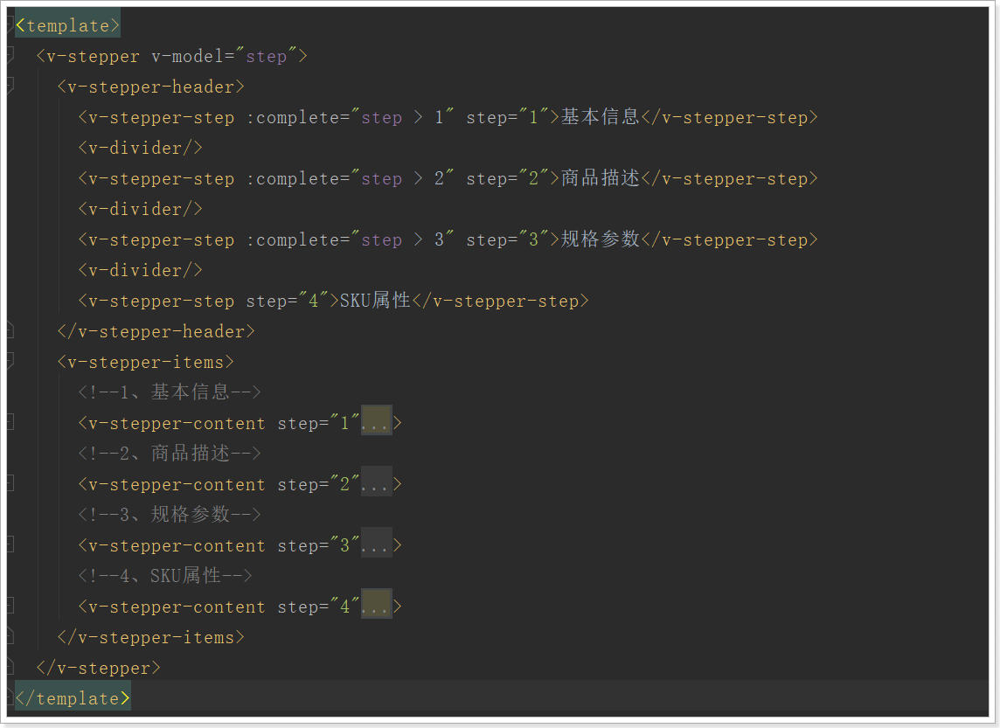
弹窗是一个独立组件：
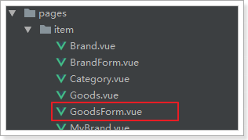
并且在Goods组件中已经引用它：
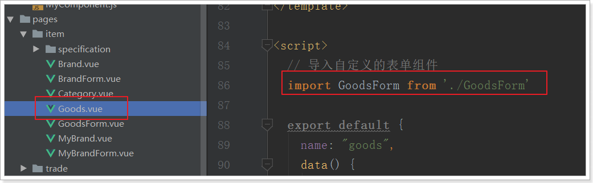
并且在页面中渲染：
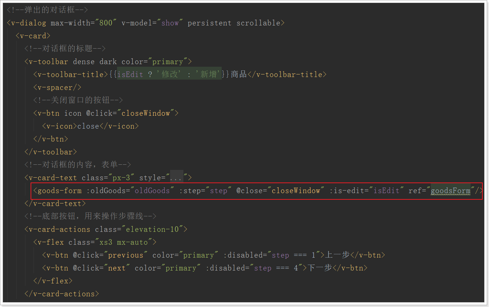
在新增商品按钮的点击事件中，改变这个dialog的show属性：
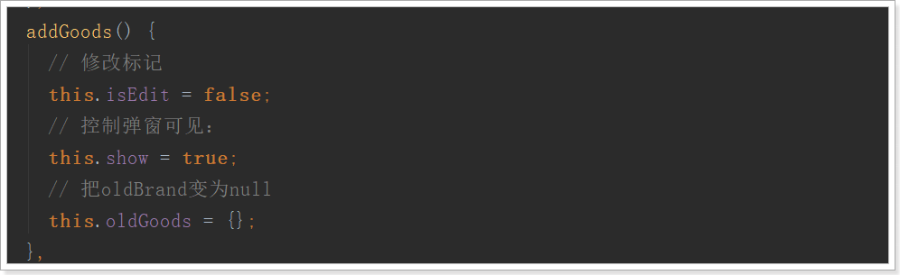
我们先来看下基本数据：
商品分类信息查询我们之前已经做过，所以这里的级联选框已经实现完成：
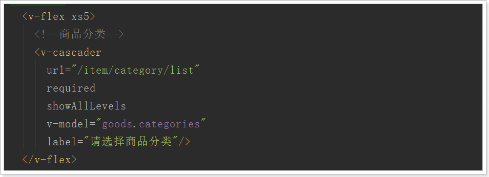
刷新页面，可以看到请求已经发出：
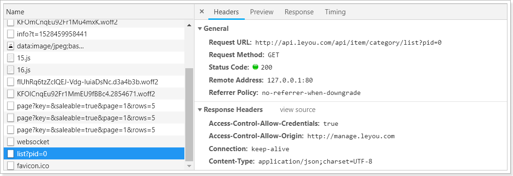
效果：
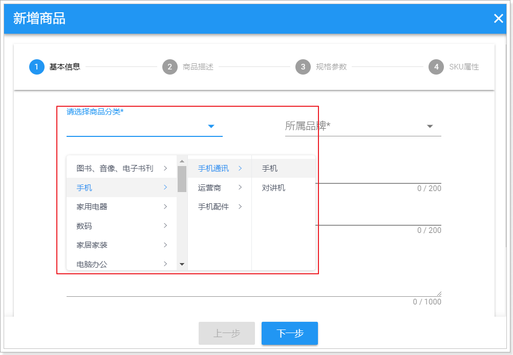
品牌也是一个下拉选框，不过其选项是不确定的，只有当用户选择了商品分类，才会把这个分类下的所有品牌展示出来。
所以页面编写了watch函数，监控商品分类的变化，每当商品分类值有变化，就会发起请求，查询品牌列表：
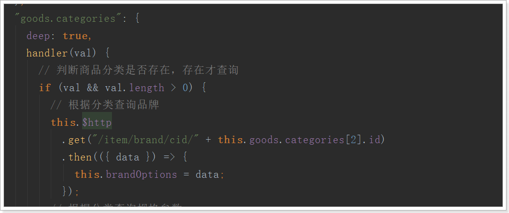
选择商品分类后，可以看到请求发起：
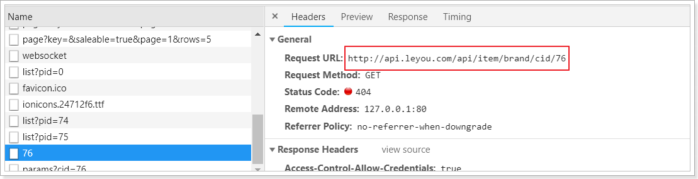
接下来，我们只要编写后台接口，根据商品分类id，查询对应品牌即可。
页面需要去后台查询品牌信息，我们自然需要提供：
请求方式：GET
请求路径：/brand/cid/{cid}
请求参数：cid
响应数据：品牌集合
BrandController
/**
* 根据分类查询品牌
* @param cid
* @return
*/
@GetMapping("cid/{cid}")
public ResponseEntity<List<Brand>> queryBrandListByCid(@PathVariable("cid")Long cid){
List<Brand> brandList = this.brandService.queryByCid(cid);
if(CollectionUtils.isEmpty(brandList)){
// 响应404
return ResponseEntity.badRequest().build();
}
// 响应200
return ResponseEntity.ok(brandList);
}BrandService
public List<Brand> queryBrandByCategory(Long cid) {
return this.brandMapper.queryByCategoryId(cid);
}BrandMapper
根据分类查询品牌有中间表，需要自己编写Sql：
@Select("SELECT b.* FROM tb_brand b LEFT JOIN tb_category_brand cb ON b.id = cb.brand_id WHERE cb.category_id = #{cid}")
List<Brand> queryByCategoryId(Long cid);效果：
剩余的几个属性：标题、子标题等都是普通文本框，我们直接填写即可，没有需要特别注意的。
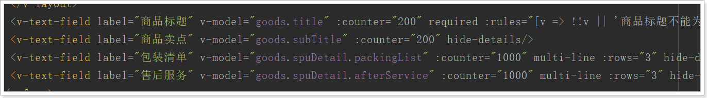
商品描述信息比较复杂，而且图文并茂，甚至包括视频。
这样的内容，一般都会使用富文本编辑器。
百度百科：
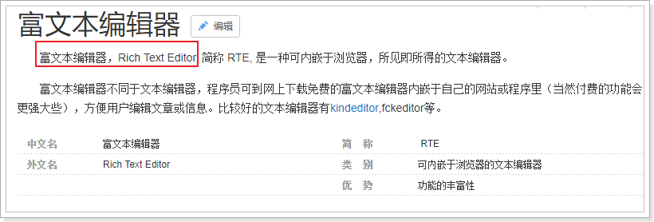
通俗来说：富文本，就是比较丰富的文本编辑器。普通的框只能输入文字，而富文本还能给文字加颜色样式等。
富文本编辑器有很多，例如：KindEditor、Ueditor。但并不原生支持vue
但是我们今天要说的，是一款支持Vue的富文本编辑器：vue-quill-editor
GitHub的主页：https://github.com/surmon-china/vue-quill-editor
Vue-Quill-Editor是一个基于Quill的富文本编辑器：Quill的官网

使用非常简单：
第一步：安装，使用npm命令：
npm install vue-quill-editor --save第二步：加载，在js中引入：
全局引入：
import Vue from 'vue'
import VueQuillEditor from 'vue-quill-editor'
const options = {}; /* { default global options } */
Vue.use(VueQuillEditor, options); // options可选局部引入：
import 'quill/dist/quill.core.css'
import 'quill/dist/quill.snow.css'
import 'quill/dist/quill.bubble.css'
import {quillEditor} from 'vue-quill-editor'
var vm = new Vue({
components:{
quillEditor
}
})我们这里采用局部引用：
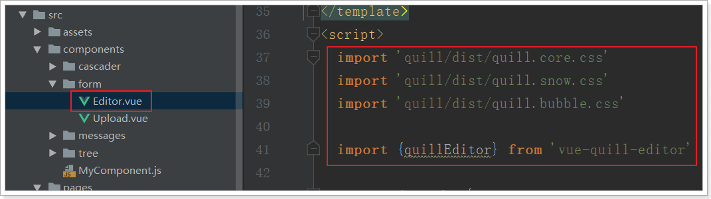
第三步：页面使用：
<quill-editor v-model="goods.spuDetail.description" :options="editorOption"/>不过这个组件有个小问题，就是图片上传的无法直接上传到后台，因此我们对其进行了封装，支持了图片的上传。

使用也非常简单：
<v-stepper-content step="2">
<v-editor v-model="goods.spuDetail.description" upload-url="/upload/image"/>
</v-stepper-content>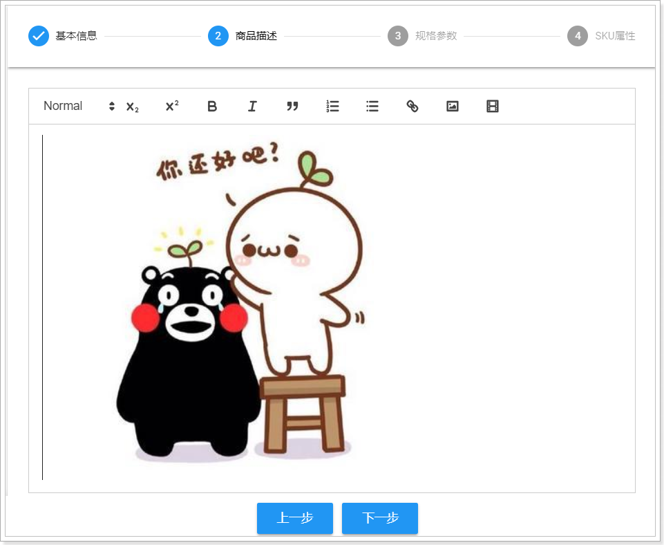
规格参数的查询我们之前也已经编写过接口，因为商品规格参数也是与商品分类绑定，所以需要在商品分类变化后去查询，我们也是通过watch监控来实现：
可以看到这里是根据商品分类id查询规格参数：SpecParam。我们之前写过一个根据gid（分组id）来查询规格参数的接口，我们接下来完成根据分类id查询规格参数。
改造查询规格参数接口
我们在原来的根据 gid（规格组id)查询规格参数的接口上，添加一个参数：cid，即商品分类id。
等一下， 考虑到以后可能还会根据是否搜索、是否为通用属性等条件过滤，我们多添加几个过滤条件：
@GetMapping("/params")
public ResponseEntity<List<SpecParam>> querySpecParam(
@RequestParam(value="gid", required = false) Long gid,
@RequestParam(value="cid", required = false) Long cid,
@RequestParam(value="searching", required = false) Boolean searching,
@RequestParam(value="generic", required = false) Boolean generic
){
List<SpecParam> list =
this.specificationService.querySpecParams(gid,cid,searching,generic);
if(list == null || list.size() == 0){
return new ResponseEntity<>(HttpStatus.NOT_FOUND);
}
return ResponseEntity.ok(list);
}改造service：
public List<SpecParam> querySpecParams(Long gid, Long cid, Boolean searching, Boolean generic) {
SpecParam param = new SpecParam();
param.setGroupId(gid);
param.setCid(cid);
param.setSearching(searching);
param.setGeneric(generic);
return this.specParamMapper.select(param);
}如果param中有属性为null，则不会吧属性作为查询条件，因此该方法具备通用性，即可根据gid查询，也可根据cid查询。
测试：
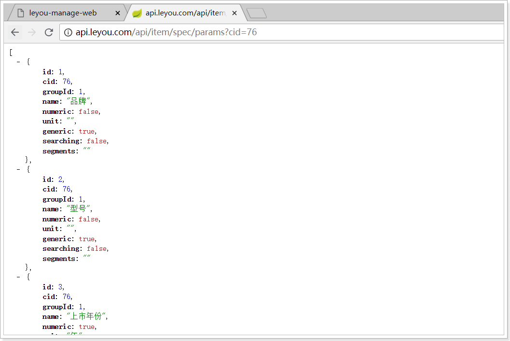
刷新页面测试：
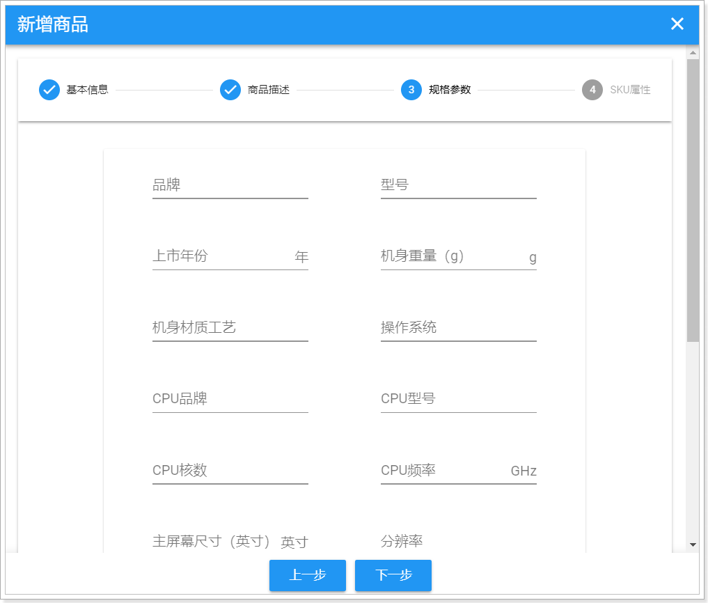
Sku属性是SPU下的每个商品的不同特征，如图：
当我们填写一些属性后，会在页面下方生成一个sku表格，大家可以计算下会生成多少个不同属性的Sku呢？
当你选择了上图中的这些选项时：
此时会产生多少种SKU呢？ 应该是 3 2 2 = 12种，这其实就是在求笛卡尔积。
我们会在页面下方生成一个sku的表格：
在sku列表的下方，有一个提交按钮：
并且绑定了点击事件：
点击后会组织数据并向后台提交：
submit() {
// 表单校验。
if(!this.$refs.basic.validate){
this.$message.error("请先完成表单内容！");
}
// 先处理goods，用结构表达式接收,除了categories外，都接收到goodsParams中
const {
categories: [{ id: cid1 }, { id: cid2 }, { id: cid3 }],
...goodsParams
} = this.goods;
// 处理规格参数
const specs = {};
this.specs.forEach(({ id,v }) => {
specs[id] = v;
});
// 处理特有规格参数模板
const specTemplate = {};
this.specialSpecs.forEach(({ id, options }) => {
specTemplate[id] = options;
});
// 处理sku
const skus = this.skus
.filter(s => s.enable)
.map(({ price, stock, enable, images, indexes, ...rest }) => {
// 标题，在spu的title基础上，拼接特有规格属性值
const title = goodsParams.title + " " + Object.values(rest).map(v => v.v).join(" ");
const obj = {};
Object.values(rest).forEach(v => {
obj[v.id] = v.v;
});
return {
price: this.$format(price), // 价格需要格式化
stock,
indexes,
enable,
title, // 基本属性
images: images ? images.join(",") : '', // 图片
ownSpec: JSON.stringify(obj) // 特有规格参数
};
});
Object.assign(goodsParams, {
cid1,
cid2,
cid3, // 商品分类
skus // sku列表
});
goodsParams.spuDetail.genericSpec = JSON.stringify(specs);
goodsParams.spuDetail.specialSpec = JSON.stringify(specTemplate);
// 提交到后台
this.$http({
method: this.isEdit ? "put" : "post",
url: "/item/goods",
data: goodsParams
})
.then(() => {
// 成功，关闭窗口
this.$emit("close");
// 提示成功
this.$message.success("保存成功了");
})
.catch(() => {
this.$message.error("保存失败！");
});
}点击提交，查看控制台提交的数据格式：
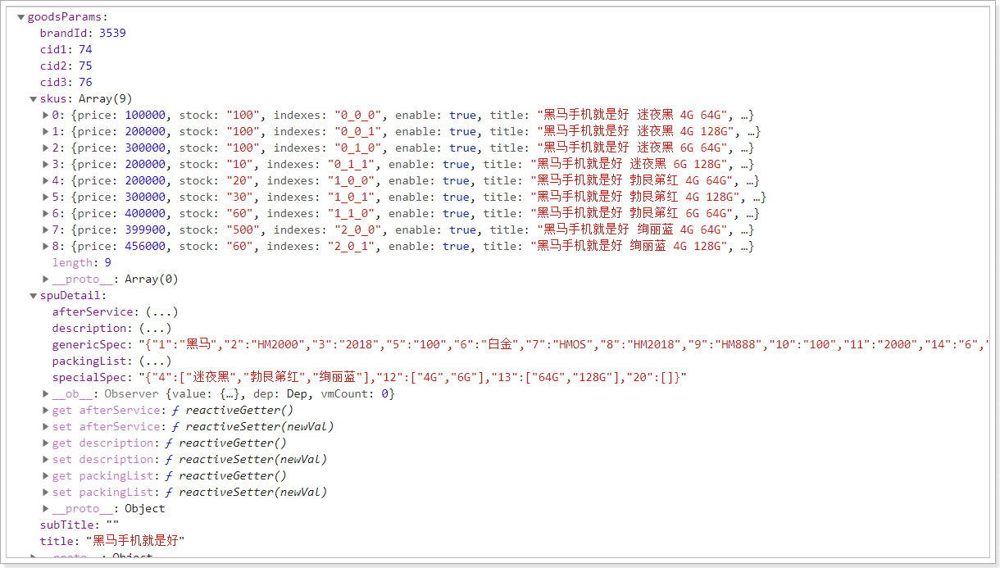
整体是一个json格式数据，包含Spu表所有数据：
SPU和SpuDetail实体类已经添加过，添加Sku和Stock对象：
Sku
@Table(name = "tb_sku")
public class Sku {
@Id
@GeneratedValue(strategy = GenerationType.IDENTITY)
private Long id;
private Long spuId;
private String title;
private String images;
private Long price;
private String ownSpec;// 商品特殊规格的键值对
private String indexes;// 商品特殊规格的下标
private Boolean enable;// 是否有效，逻辑删除用
private Date createTime;// 创建时间
private Date lastUpdateTime;// 最后修改时间
@Transient
private Integer stock;// 库存
}注意：这里保存了一个库存字段，在数据库中是另外一张表保存的，方便查询。
Stock
@Table(name = "tb_stock")
public class Stock {
@Id
private Long skuId;
private Integer seckillStock;// 秒杀可用库存
private Integer seckillTotal;// 已秒杀数量
private Integer stock;// 正常库存
}请求方式：POST
请求路径：/goods
请求参数：Spu的json格式的对象，spu中包含spuDetail和Sku集合。这里我们该怎么接收？我们之前定义了一个SpuBo对象，作为业务对象。这里也可以用它，不过需要再扩展spuDetail和skus字段：
public class SpuBo extends Spu {
@Transient
String cname;// 商品分类名称
@Transient
String bname;// 品牌名称
@Transient
SpuDetail spuDetail;// 商品详情
@Transient
List<Sku> skus;// sku列表
}代码：
/**
* 新增商品
* @param spu
* @return
*/
@PostMapping
public ResponseEntity<Void> saveGoods(@RequestBody SpuBo spuBo) {
try {
this.goodsService.save(spu);
return new ResponseEntity<>(HttpStatus.CREATED);
} catch (Exception e) {
e.printStackTrace();
return new ResponseEntity<>(HttpStatus.INTERNAL_SERVER_ERROR);
}
}注意：通过@RequestBody注解来接收Json请求
这里的逻辑比较复杂，我们除了要对SPU新增以外，还要对SpuDetail、Sku、Stock进行保存
@Transactional
public void save(SpuBo spu) {
// 保存spu
spu.setSaleable(true);
spu.setValid(true);
spu.setCreateTime(new Date());
spu.setLastUpdateTime(spu.getCreateTime());
this.spuMapper.insert(spu);
// 保存spu详情
spu.getSpuDetail().setSpuId(spu.getId());
this.spuDetailMapper.insert(spu.getSpuDetail());
// 保存sku和库存信息
saveSkuAndStock(spu.getSkus(), spu.getId());
}
private void saveSkuAndStock(List<Sku> skus, Long spuId) {
for (Sku sku : skus) {
if (!sku.getEnable()) {
continue;
}
// 保存sku
sku.setSpuId(spuId);
// 初始化时间
sku.setCreateTime(new Date());
sku.setLastUpdateTime(sku.getCreateTime());
this.skuMapper.insert(sku);
// 保存库存信息
Stock stock = new Stock();
stock.setSkuId(sku.getId());
stock.setStock(sku.getStock());
this.stockMapper.insert(stock);
}
}都是通用Mapper，略
目录结构：

在商品详情页，每一个商品后面，都会有一个编辑按钮：
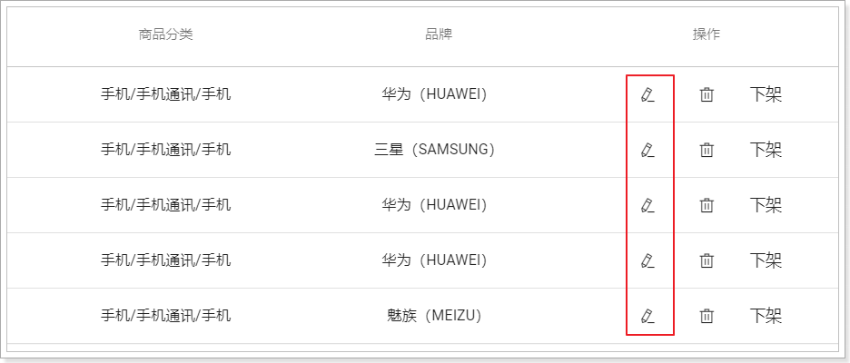
点击这个按钮，就会打开一个商品编辑窗口，我们看下它所绑定的点击事件：
对应的方法：
可以看到这里发起了两个请求，在查询商品详情和sku信息。
因为在商品列表页面，只有spu的基本信息：id、标题、品牌、商品分类等。比较复杂的商品详情（spuDetail)和sku信息都没有，编辑页面要回显数据，就需要查询这些内容。
因此，接下来我们就编写后台接口，提供查询服务接口。
GoodsController
需要分析的内容：
@GetMapping("/spu/detail/{id}")
public ResponseEntity<SpuDetail> querySpuDetailById(@PathVariable("id") Long id) {
SpuDetail detail = this.goodsService.querySpuDetailById(id);
if (detail == null) {
return new ResponseEntity<>(HttpStatus.NOT_FOUND);
}
return ResponseEntity.ok(detail);
}GoodsService
public SpuDetail querySpuDetailById(Long id) {
return this.spuDetailMapper.selectByPrimaryKey(id);
}测试
分析
GoodsController
@GetMapping("sku/list")
public ResponseEntity<List<Sku>> querySkuBySpuId(@RequestParam("id") Long id) {
List<Sku> skus = this.goodsService.querySkuBySpuId(id);
if (skus == null || skus.size() == 0) {
return new ResponseEntity<>(HttpStatus.NOT_FOUND);
}
return ResponseEntity.ok(skus);
}GoodsService
需要注意的是，为了页面回显方便，我们一并把sku的库存stock也查询出来
public List<Sku> querySkuBySpuId(Long spuId) {
// 查询sku
Sku record = new Sku();
record.setSpuId(spuId);
List<Sku> skus = this.skuMapper.select(record);
for (Sku sku : skus) {
// 同时查询出库存
sku.setStock(this.stockMapper.selectByPrimaryKey(sku.getId()).getStock());
}
return skus;
}测试：
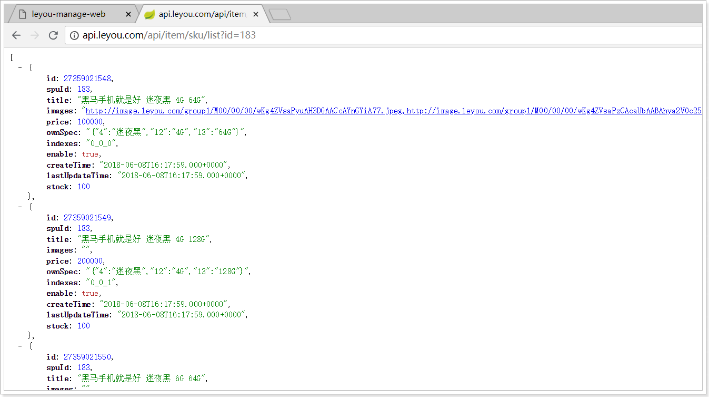
随便点击一个编辑按钮，发现数据回显完成：
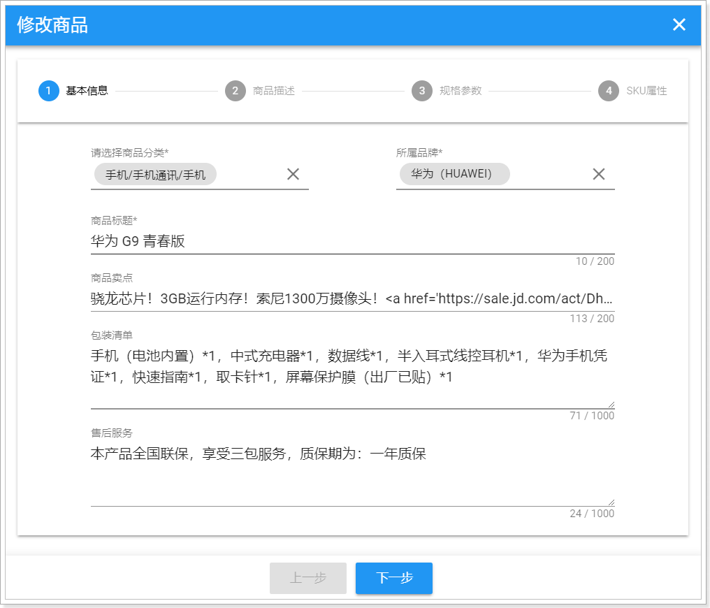
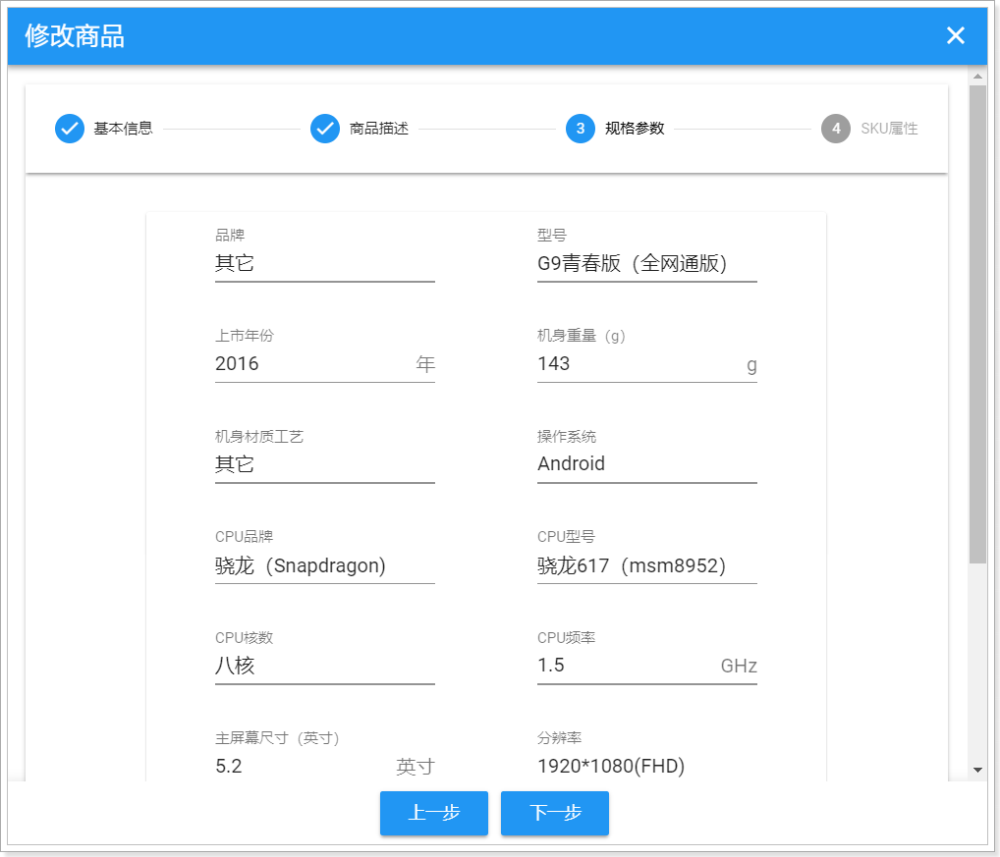
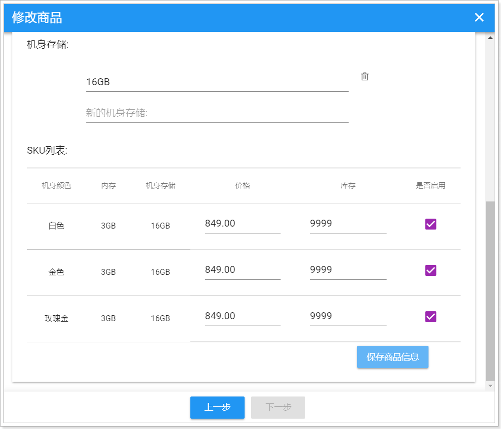
这里的保存按钮与新增其实是同一个，因此提交的逻辑也是一样的，这里不再赘述。
随便修改点数据，然后点击保存，可以看到浏览器已经发出请求：
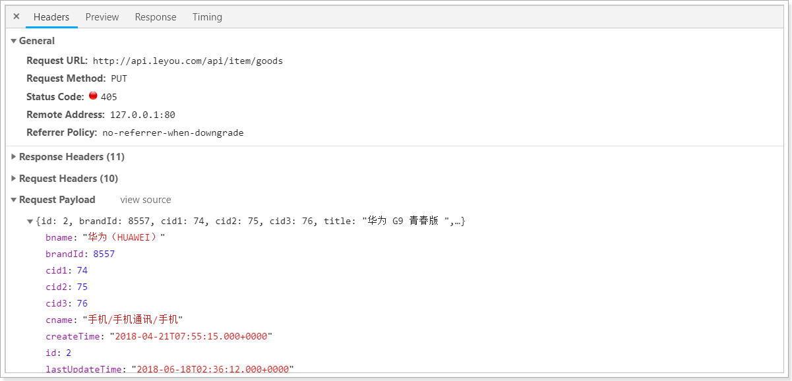
接下来，我们编写后台，实现修改商品接口。
/**
* 新增商品
* @param spu
* @return
*/
@PutMapping
public ResponseEntity<Void> updateGoods(@RequestBody SpuBo spu) {
try {
this.goodsService.update(spu);
return new ResponseEntity<>(HttpStatus.NO_CONTENT);
} catch (Exception e) {
e.printStackTrace();
return new ResponseEntity<>(HttpStatus.INTERNAL_SERVER_ERROR);
}
}spu数据可以修改，但是SKU数据无法修改，因为有可能之前存在的SKU现在已经不存在了，或者以前的sku属性都不存在了。比如以前内存有4G，现在没了。
因此这里直接删除以前的SKU，然后新增即可。
代码：
@Transactional
public void update(SpuBo spu) {
// 查询以前sku
List<Sku> skus = this.querySkuBySpuId(spu.getId());
// 如果以前存在，则删除
if(!CollectionUtils.isEmpty(skus)) {
List<Long> ids = skus.stream().map(s -> s.getId()).collect(Collectors.toList());
// 删除以前库存
Example example = new Example(Stock.class);
example.createCriteria().andIn("skuId", ids);
this.stockMapper.deleteByExample(example);
// 删除以前的sku
Sku record = new Sku();
record.setSpuId(spu.getId());
this.skuMapper.delete(record);
}
// 新增sku和库存
saveSkuAndStock(spu.getSkus(), spu.getId());
// 更新spu
spu.setLastUpdateTime(new Date());
spu.setCreateTime(null);
spu.setValid(null);
spu.setSaleable(null);
this.spuMapper.updateByPrimaryKeySelective(spu);
// 更新spu详情
this.spuDetailMapper.updateByPrimaryKeySelective(spu.getSpuDetail());
}与以前一样。
商品的删除、上下架大家自行实现。
后台系统的内容暂时告一段落，有了商品，接下来我们就要在页面展示商品，给用户提供浏览和购买的入口，那就是我们的门户系统。
门户系统面向的是用户，安全性很重要，而且搜索引擎对于单页应用并不友好。因此我们的门户系统不再采用与后台系统类似的SPA（单页应用）。
依然是前后端分离，不过前端的页面会使用独立的html，在每个页面中使用vue来做页面渲染。
webpack打包多页应用配置比较繁琐，项目结构也相对复杂。这里为了简化开发（毕竟我们不是专业的前端人员），我们不再使用webpack，而是直接编写原生的静态HTML。
创建一个新的工程：

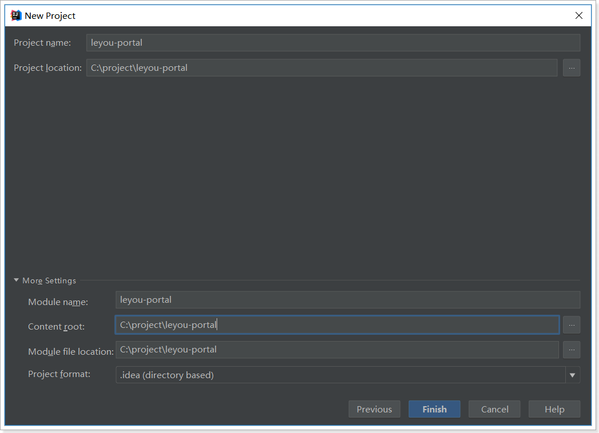
将课前资料中的leyou-portal解压，并复制到这个项目下

解压缩：
项目结构：
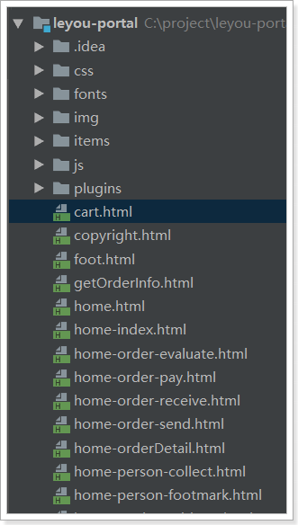
没有webpack，我们就无法使用webpack-dev-server运行这个项目，实现热部署。
所以，这里我们使用另外一种热部署方式：live-server，
地址；https://www.npmjs.com/package/live-server
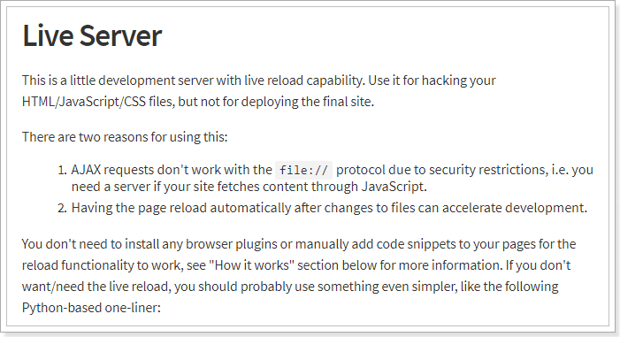
这是一款带有热加载功能的小型开发服务器。用它来展示你的HTML / JavaScript / CSS，但不能用于部署最终的网站。
安装，使用npm命令即可，这里建议全局安装，以后任意位置可用
npm install -g live-server运行时，直接输入命令：
live-server另外，你可以在运行命令后，跟上一些参数以配置：
--port=NUMBER - 选择要使用的端口，默认值：PORT env var或8080--host=ADDRESS - 选择要绑定的主机地址，默认值：IP env var或0.0.0.0（“任意地址”）--no-browser - 禁止自动Web浏览器启动--browser=BROWSER - 指定使用浏览器而不是系统默认值--quiet | -q - 禁止记录--verbose | -V - 更多日志记录（记录所有请求，显示所有侦听的IPv4接口等）--open=PATH - 启动浏览器到PATH而不是服务器root--watch=PATH - 用逗号分隔的路径来专门监视变化（默认值：观看所有内容）--ignore=PATH- 要忽略的逗号分隔的路径字符串（anymatch -compatible definition）--ignorePattern=RGXP-文件的正则表达式忽略（即.*\.jade）（不推荐使用赞成--ignore）--middleware=PATH - 导出要添加的中间件功能的.js文件的路径; 可以是没有路径的名称，也可以是引用middleware文件夹中捆绑的中间件的扩展名--entry-file=PATH - 提供此文件（服务器根目录）代替丢失的文件（对单页应用程序有用）--mount=ROUTE:PATH - 在定义的路线下提供路径内容（可能有多个定义）--spa - 将请求从/ abc转换为/＃/ abc（方便单页应用）--wait=MILLISECONDS - （默认100ms）等待所有更改，然后重新加载--htpasswd=PATH - 启用期待位于PATH的htpasswd文件的http-auth--cors - 为任何来源启用CORS（反映请求源，支持凭证的请求）--https=PATH - 到HTTPS配置模块的路径--proxy=ROUTE:URL - 代理ROUTE到URL的所有请求--help | -h - 显示简洁的使用提示并退出--version | -v - 显示版本并退出我们进入leyou-portal目录，输入命令：
live-server --port=9002
现在我们访问只能通过：http://127.0.0.1:9002
我们希望用域名访问：http://www.leyou.com
第一步，修改hosts文件，添加一行配置：
127.0.0.1 www.leyou.com第二步，修改nginx配置，将www.leyou.com反向代理到127.0.0.1:9002
server {
listen 80;
server_name www.leyou.com;
proxy_set_header X-Forwarded-Host $host;
proxy_set_header X-Forwarded-Server $host;
proxy_set_header X-Forwarded-For $proxy_add_x_forwarded_for;
location / {
proxy_pass http://127.0.0.1:9002;
proxy_connect_timeout 600;
proxy_read_timeout 600;
}
}重新加载nginx配置：nginx.exe -s reload

为了方便后续的开发，我们在前台系统中定义了一些工具，放在了common.js中：

部分代码截图：

首先对axios进行了一些全局配置，请求超时时间，请求的基础路径，是否允许跨域操作cookie等
定义了对象 ly ，也叫leyou，包含了下面的属性：